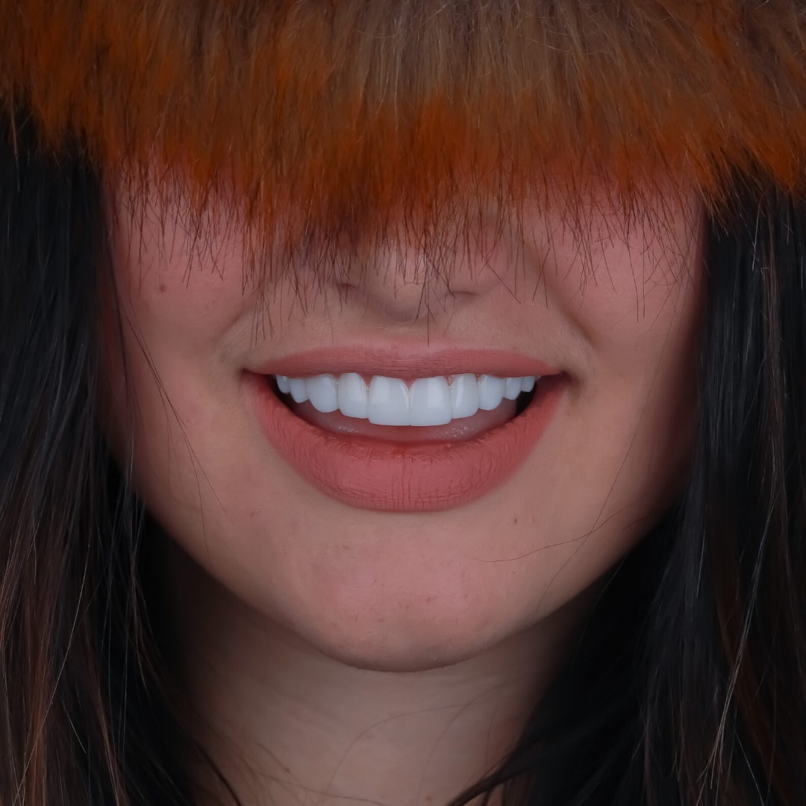

La rehabilitación oral es la parte de la Odontología encargada de la restauración; es decir, devuelve la función estética y armonía oral mediante prótesis dentales debido a la pérdida de dientes, grandes destrucciones o para solucionar problemas estéticos, siempre buscando una oclusión y función correcta.
Los materiales que usamos para estos procedimientos van de la mano de la odontología digital, siendo esta muy exacta en todos los resultados y con garantía de excelente calidad. La precisión digital permite crear restauraciones perfectamente adaptadas a cada paciente, garantizando resultados predecibles y duraderos.
¿Qué incluye la Rehabilitación Oral?
La rehabilitación oral abarca una amplia gama de tratamientos diseñados para restaurar la funcionalidad y la estética de tu boca:
- ◆ Prótesis fija individual (coronas y puentes de porcelana)
- ◆ Prótesis removible parcial o total
- ◆ Carillas y facetas de porcelana
- ◆ Incrustaciones y onlays cerámicos
- ◆ Restauraciones sobre implantes dentales
- ◆ Rehabilitación oral digital (CAD/CAM)
- ◆ Tratamiento de bruxismo y férulas de descarga
Galería de Rehabilitación Oral
Evidencia de nuestros resultados funcionales y estéticos
